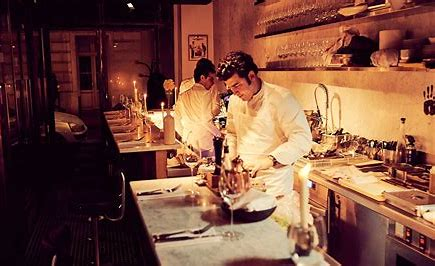
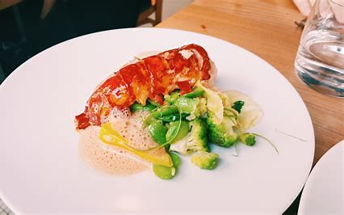
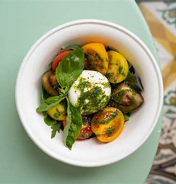
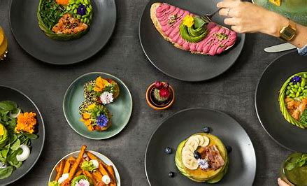

Paris is a food lover's paradise, with an endless array of restaurants to suit every taste and budget. From cozy bistros serving classic French dishes to Michelin-starred restaurants offering innovative cuisine, Paris has something for everyone. The city's culinary scene is renowned for its emphasis on fresh, seasonal ingredients, and traditional cooking techniques. Many of the city's restaurants boast stunning interior design, with elegant furnishings, romantic lighting, and picturesque views. Whether you're looking for a casual lunch or a romantic dinner for two, Paris has a restaurant to suit your mood and palate. With its diverse and exciting culinary scene, Paris is a must-visit destination for foodies from around the world.
Accueil| Vivant 2 |
|  |
| Vivant 2 is a chic and intimate restaurant located in the heart of Paris, known for its creative and seasonal cuisine. The restaurant features a minimalist interior design, with sleek furnishings and modern artwork. Vivant 2's menu showcases the freshest and most flavorful ingredients, with a focus on local and organic produce. The restaurant's dishes are expertly crafted and beautifully presented, with a fusion of French and international flavors. Vivant 2 offers an unparalleled dining experience, with impeccable service and an impressive wine list. Whether you're looking for a romantic dinner for two or a memorable meal with friends, Vivant 2 is the ultimate destination for foodies in Paris. |
| Le Servan |
|  |
| Le Servan is a stylish and trendy restaurant located in the trendy 11th arrondissement of Paris, known for its innovative and bold cuisine. The restaurant features a cozy and inviting interior design, with warm lighting, wooden furnishings, and rustic decor. Le Servan's menu showcases the freshest and most flavorful ingredients, with a focus on creative and unexpected flavor combinations. The restaurant's dishes are expertly crafted and beautifully presented, with a fusion of French and international flavors. Le Servan offers a unique dining experience, with friendly and attentive service and an extensive wine list. Whether you're looking for a casual lunch or a sophisticated dinner, Le Servan is the ultimate destination for foodies looking to explore Paris's exciting culinary scene. |
| L'opium |
|
|
| L'Opium is a chic and trendy restaurant located in the heart of Paris, offering a unique and innovative dining experience. The restaurant boasts a stylish and elegant interior design, with warm lighting, sleek furnishings, and a cozy ambiance. L'Opium's menu showcases a fusion of French and Asian flavors, with a focus on fresh and locally-sourced ingredients. The restaurant's dishes are expertly crafted and beautifully presented, with a range of options to suit all tastes and dietary requirements. L'Opium also has an extensive wine list, featuring some of the best local and international vintages. Whether you're looking for a romantic dinner for two or a sophisticated meal with friends or family, L'Opium is the ultimate destination for foodies looking to explore Paris's exciting culinary scene |
| Le Paradis du fruit |
|  |
| Le Paradis du Fruit is a popular restaurant chain in Paris, known for its healthy and delicious cuisine inspired by fruits and vegetables. The restaurant features a colorful and inviting interior design, with a modern and vibrant ambiance. Le Paradis du Fruit's menu is centered around fresh fruits and vegetables, with a wide range of options for breakfast, lunch, and dinner. The restaurant offers a variety of fruit smoothies, salads, sandwiches, and creative main dishes, all made with the freshest and most flavorful ingredients. Le Paradis du Fruit also offers a selection of delicious desserts, including fruit tarts, sorbets, and cakes, perfect for those with a sweet tooth. Whether you're looking for a healthy and refreshing meal or a quick and tasty snack, Le Paradis du Fruit is the ultimate destination for foodies in Paris. |
| The Avocado Show |
|  |
| The Avocado Show is a trendy and innovative restaurant in Paris, offering a unique dining experience centered around everyone's favorite superfood - the avocado. The restaurant's interior is sleek and modern, with a bright and colorful design that perfectly reflects the vibrant flavors of the menu. The Avocado Show's menu features an array of avocado-based dishes, including avocado toast, avocado burgers, avocado smoothie bowls, and even avocado ice cream. Each dish is expertly crafted and beautifully presented, with a focus on fresh, high-quality ingredients. The Avocado Show also has an extensive cocktail list, featuring some of the most inventive and creative avocado-based drinks around. Whether you're an avocado lover or just looking for a fun and unique dining experience, The Avocado Show is a must-visit destination in Paris. |